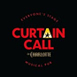
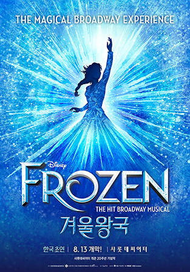
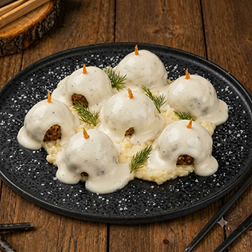
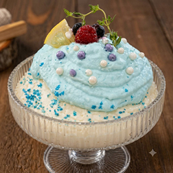
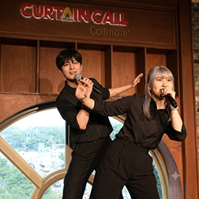

스페셜 콜라보
스페셜 콜라보
HOME > 스페셜콜라보 > 패키지
패키지Package
작품에서 영감받은 메뉴로 채우는 시즌 한정 컬래버레이션을 확인하세요.

커튼콜 인 샬롯 패키지
국내 최초 뮤지컬 전용 극장 샤롯데씨어터와
국내 최초 뮤지컬펍 커튼콜이 새롭게 만났다!

- ※ 패키지 상품 수령은 공연 시작 2시간 전부터 공연 종료 후 1시간 이후까지 가능합니다.
- ※ 19세 이상 이용 가능합니다. 미성년자의 경우 보호자 동반 시 입장 가능하며, 해당 테이블은 주류 주문이 불가합니다. (논알콜 음료 주문 가능)
- ※ 주차할인권 판매 : 단일 권종(4시간, 최대 2매)으로 판매합니다.
01
Food & Musical
-

화이트 미트볼 플레이트 눈 덮인 크림소스 아래, 부드러운 미트볼 플레이트 -
 스노우 기프트 박스
파란 리본을 두른 선물상자 속, 바나나와 크림을 켜켜이 쌓은 겨울 디저트
스노우 기프트 박스
파란 리본을 두른 선물상자 속, 바나나와 크림을 켜켜이 쌓은 겨울 디저트
-

블루 프로스트 파르페 서리 내린 듯 하늘빛 크림 위에 베리와 펄 토핑을 올린 파르페 -
 윈터 포레스트 샐러드
알록달록 채소를 층층이 쌓고, 눈 쌓인 트리 한 그루
윈터 포레스트 샐러드
알록달록 채소를 층층이 쌓고, 눈 쌓인 트리 한 그루
-
 스노우맨 바닐라 쉐이크
마시멜로 눈사람이 인사하는 부드러운 바닐라 쉐이크
스노우맨 바닐라 쉐이크
마시멜로 눈사람이 인사하는 부드러운 바닐라 쉐이크
-

커튼콜 쇼 공연이 끝난 뒤에도 이어지는 무대, 배우들의 라이브 넘버를 가까이서!
02
Package
- 1인 패키지
- 칵테일 1잔
- + 핑거푸드 1개
- + 전용 코스터 1개
- 2인 패키지
- 칵테일 2잔
- + 핑거푸드 2개
- + 전용 코스터 2개
- 운영 시간
- 공연 시작 시간 2시간 전 ~ 공연 종료 후 1시간 이내※ 인터미션 시 수령불가 / 공연 종료 후 수령 시 공연장 내 취식 불가 (테이크아웃만 가능)
- 위치
- 공연장 4층 (객석 2층)
커튼콜 인 샬롯 패키지 운영 안내
- 운영 형태
- 공연 티켓 + 커튼콜 패키지 메뉴(테이크아웃 형태) 제공※ 좌석 이용 불가
- 운영일
- 매주 수, 목, 금, 토, 일
커튼콜 인 샬롯 패키지 유의사항
- ◆ 패키지 이용 전 아래 유의사항을 꼭 확인해주세요!
- - 패키지는 본인이 예약한 관람 당일, 식당가 운영 시간 내에서 이용 가능합니다.
- - 시그니처 칵테일은 맥주나 와인, 논알콜 음료로 변경 가능합니다.
- - 미성년자의 경우 보호자 동반 시 입장 가능하며, 해당 테이블은 주류 주문이 불가합니다. (논알콜 음료 주문 가능)
- - 스탠딩 테이블은 커튼콜 인 샬롯 매장 밖의 테이크아웃 전용 공간으로, 테이크아웃 고객은 커튼콜 매장 내 공연을 관람할 수 없습니다.
- - 패키지 상품 수령은 공연 시작 2시간 전부터 공연 종료 후 1시간 이후까지 가능합니다.
- - 식당이 위치한 <롯데월드 단지>는 주차가 많이 혼잡하며, 무료 주차 지원이 불가합니다.
커튼콜 인 샬롯 패키지 이용 규정 및 환불 정책
- ◆ 패키지 구매, 이용, 취소 및 환불에 관한 주요 정책을 반드시 확인해주세요!
- - 2인 세트의 경우, 2매 단위로 구매 가능합니다. (예시: 2장, 4장)
- - 구매 후 부분 취소(예시: 4장 구매 후 2장 취소)는 불가합니다.
- - 취소 요청 시점에 따라 일정액의 취소 수수료가 부과됩니다.
- - 취소 마감 시간: 공연일 1일 전 오후 5시 (※공연일이 월·화 또는 공휴일 다음날인 경우 토요일 오전 11시)
- - 공연 시작 및 방문 시점에 따라 패키지 상품 수령이 제한될 수 있습니다.